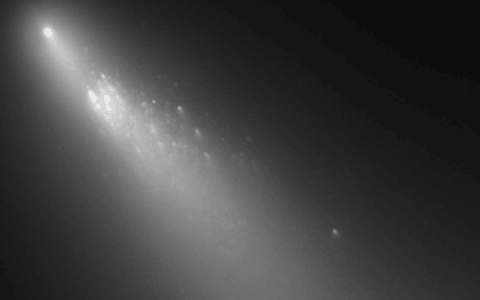
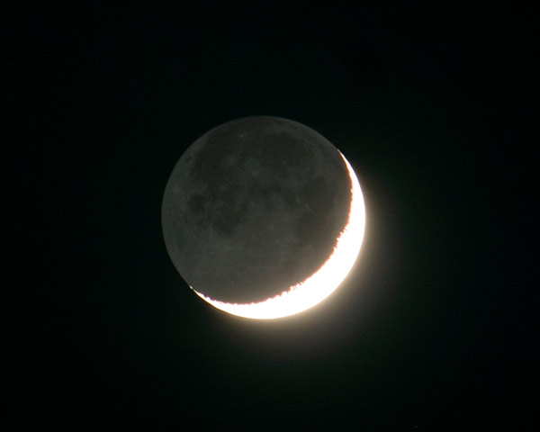
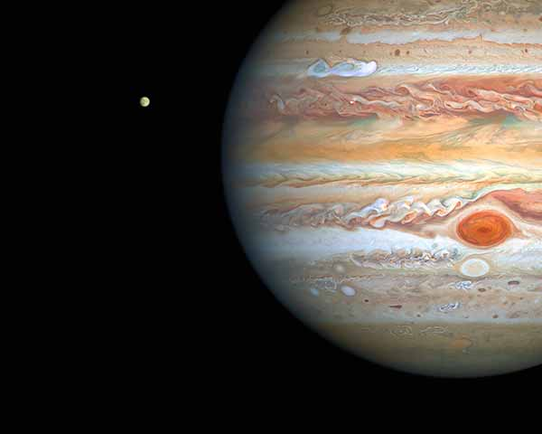

مجموعهای از ابزارهای زنده، آنلاین و کاملاً رایگان برای برنامهریزی رصد — بدون نیاز به نصب یا ثبتنام — از نقشه آسمان تا وضعیت دنبالهدارها، ماه، قمرهای مشتری و شرایط جوی.
هدف ما این است که علاقهمندان به نجوم و رصد، بدون پرداخت هزینه و بدون نیاز به نصب اپلیکیشن یا ثبتنام، به دادههای نجومی بهروز دسترسی داشته باشند. همهی ابزارهای زیر رایگان، مبتنی بر مرورگر و آزادانه در دسترس عموم هستند.
موقعیت لحظهای ستارهها، سیارات و صورتهای فلکی روی آسمان محل شما، قابل چرخش و بزرگنمایی.
ورود به ابزار ↗
فهرست دنبالهدارهای قابل رصد، قدر نوری فعلی و روند تغییرات آنها — داده زنده از COBS.
ورود به ابزار ↗
فاز فعلی ماه، درصد روشنایی، زمان طلوع و غروب و مناسب یا نامناسب بودن شب برای رصد دیپاسکای.
ورود به ابزار ↗
آرایش لحظهای چهار قمر گالیلهای — یو، اروپا، گانیمد و کالیستو — نسبت به مشتری برای رصد با تلسکوپ.
ورود به ابزار ↗پیشبینی کیفیت دید (Seeing)، شفافیت جو و پوشش ابر برای ساعات پیش رو، ویژه انتخاب بهترین شب رصد.
ورود به ابزار ↗زمان، ارتفاع و جهت گذرهای قابلرؤیت ایستگاه فضایی بینالمللی (ISS) برای شهر یا موقعیت شما.
ورود به ابزار ↗هرکدام از این ابزارها بهمرور و بهصورت جداگانه طراحی و فعال میشوند؛ برای اطلاع از فعالشدن هرکدام، صفحه اخبار یا اینستاگرام کاوش را دنبال کنید.